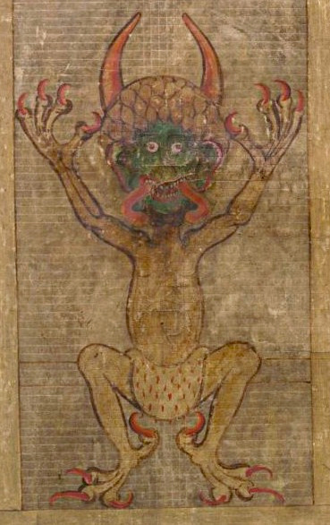
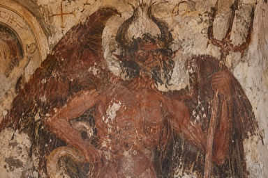
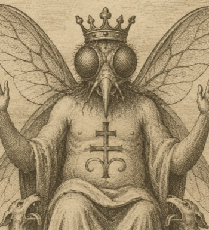
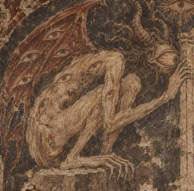
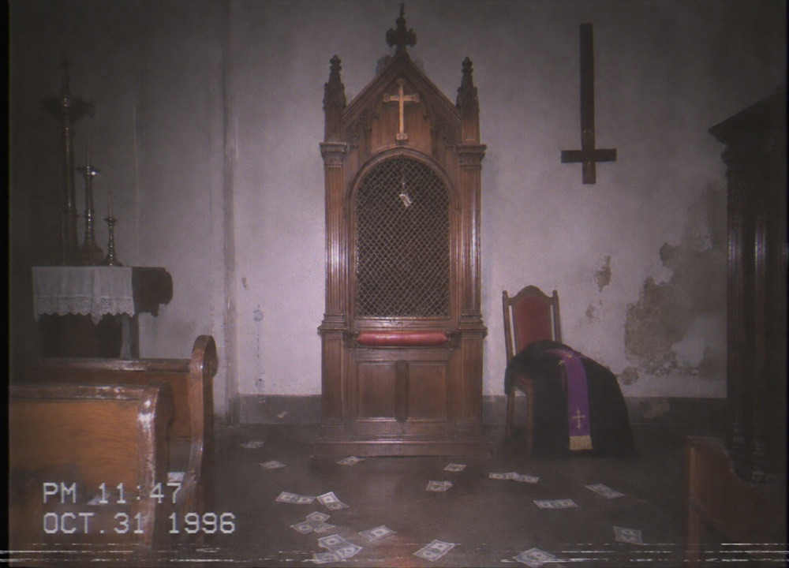
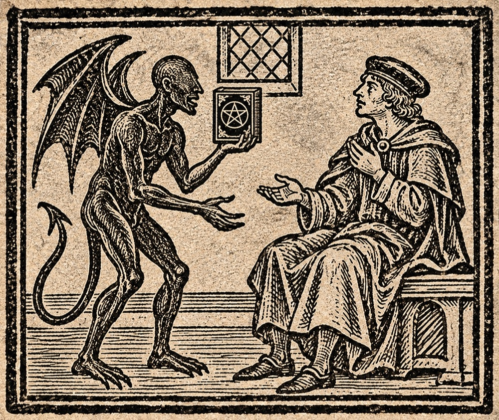
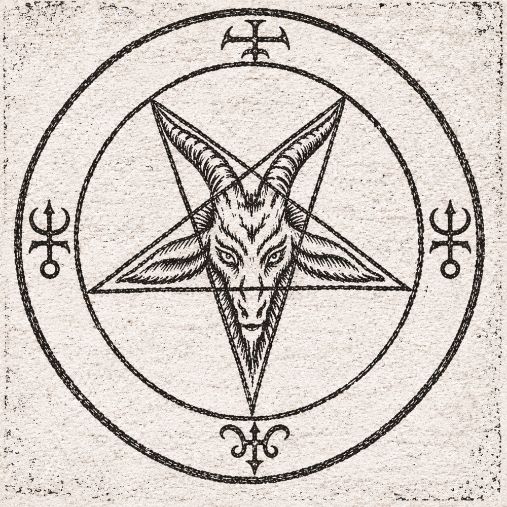

악마에 관하여
No.000001
악마란 무엇인가. 두려움에 붙인 이름인가, 이름 뒤에 숨은 존재인가.
악마(惡魔, Devil, Demon)는 여러 종교와 문화에서 악, 유혹, 대립을 설명하는 존재로 등장한다. 다만 같은 말로 번역되더라도 그 기원과 역할까지 같은 것은 아니다. 아브라함계 종교의 사탄과 불교에서 수행을 가로막는 마를 하나의 존재로 단정해서는 안 된다.[1]
이 문서는 먼저 문헌에 남은 개념을 정리하고, 뒤이어 악마를 숭배한 교회와 한 권의 책에 얽힌 전설, 악마를 쫓는 구마에 관한 설명을 옮긴다. 기록의 빈칸이 곧 부재의 증거인 것은 아니다.
문헌 속의 악마#
No.000002악마의 모습은 그것을 기록한 시대와 믿음에 따라 달라진다. 도상 속의 뿔이나 날개만으로 모든 전승을 읽을 수는 없다.[1]
- 조로아스터교ZOROASTRIANISM
- 선과 악의 대립이라는 틀에서 악한 영인 앙그라 마이뉴가 등장한다.
- 기독교CHRISTIANITY
- 사탄은 신에 대적하고 인간을 유혹하는 존재로 묘사된다. 그 의미를 해석하는 관점은 전통과 신학적 입장에 따라 다르다.
- 이슬람교ISLAM
- 이블리스와 샤이탄에 관한 전승은 불순종과 유혹이라는 주제와 연결된다.
- 불교BUDDHISM
- 마는 수행과 깨달음을 방해하는 존재로 나타나며, 내면의 집착이나 갈등과 연결해 읽히기도 한다.
서로 다른 전승의 명칭과 역할을 그대로 대응시키지 않도록 주의할 것.
유명 악마 4선#
No.000003
사탄(Satan)은 하늘의 적대자요, 사람을 미혹하는 자라 전한다. 『요한 묵시록』에 이르기를, 큰 용의 모습으로 그 무리를 이끌고 싸웠으나 미카엘에게 패하여 땅으로 내쫓겼다 하였다.
루시퍼(Lucifer)는 새벽별의 이름이다. 『이사야서』에는 하늘 높은 곳에 제 왕좌를 세우려다 깊은 구렁으로 떨어지는 자가 기록되어 있다. 본디 바빌론 왕을 빗댄 말이었으나, 후대 기독교에서는 이를 사탄의 추락으로 풀이하였다.

베엘제붑(Beelzebub)은 악귀들의 우두머리라 불렸다. 『마태오 복음서』에 이르기를, 예수가 악귀를 쫓아내자 바리사이들이 그 힘을 베엘제붑에게서 얻었다고 비난하였다. 이에 예수는 스스로 갈라져 싸우는 나라는 존속하지 못한다 하였다.

아노미르(Anomir)는 관음의 악마라 전한다. 소실된 『이세록』에는 “그가 성문을 지난 뒤로 백성은 이웃의 허물을 캐고, 밤이면 제 허물이 드러날까 떨었다”라 기록되어 있다. 이에 옛 노래는 그를 두고 “형틀 없이 사람을 가두고, 칼 없이 쇠하게 하는 자”라 불렀다.
악마 숭배#
No.000004한때 외곽에 악마를 숭배한다는 의혹을 받던 사이비 교회가 있었다고 한다. 밤마다 창문을 가린 채 예배를 열었으나, 내부에서 무슨 일이 있었는지는 알려지지 않았다. 교회는 오래전에 문을 닫았고 건물만 남아 있다.
주민들 사이에는 예배당이 비어 있는데도 안에서 여러 사람이 한목소리로 웃는 소리가 났다는 이야기가 전해진다.
아래 사진은 교회가 폐쇄된 뒤 그곳을 찾은 방문자가 촬영해 가져온 것이다. 버려진 예배 공간과 부속 교실의 모습이 담겨 있다.

악마의 서#
No.000005
삽화 속 붉은 책
옛 삽화에서 악마와 함께 여러 차례 묘사되는 책을 『악마의 서』라 부른다고 전해진다. 대체로 붉은 표지에 악마의 상징이 그려진 모습으로 묘사된다.

역오망성
역오망성은 두 꼭짓점이 위를, 한 꼭짓점이 아래를 향하는 다섯 갈래 별 모양이다. 옆 도판은 그 안에 염소의 머리를 겹쳐 그린 문양이다.
엑소시스트와 구마#
No.000006구마(驅魔, Exorcism)는 악마를 쫓아내거나 그 지배에서 사람을 해방시키기 위한 종교 의식을 뜻한다. 이를 수행하는 이를 엑소시스트(Exorcist), 또는 구마사라 부른다. 가톨릭에서는 예수 그리스도의 이름으로 악의 세력에 맞서 보호와 해방을 청하는 기도로 설명한다.[5]
구마 의식의 과정
가톨릭의 장엄 구마는 주교 또는 교구장의 특별한 허가를 받은 사제가 집전한다. 의식에는 성수를 뿌리고 십자가를 보이는 행위, 시편과 복음 낭독, 해방을 청하는 기도와 악령에게 떠나라고 명하는 기도가 포함된다.[5][6]
구마에 사용되는 악마의 이름
구마 전통에서는 악마의 이름을 묻고 그 이름을 의식에 사용하기도 한다. 옛 『로마 예식서』에는 악령에게 이름을 밝히라고 명하는 대목이 있다. 이는 쫓아내려는 존재를 특정하는 행위로 읽을 수 있다. 『마르코 복음서』 5장에서도 예수가 이름을 묻자 악령이 ‘레기온’이라 답한다.[6][7]
영화 속의 구마
영화 『콘스탄틴』(2005)은 존 콘스탄틴이 악마와 맞서고 빙의된 사람에게서 악령을 쫓아내는 모습을 그린다. 영화 속 구마는 초자연적인 현상과 시각적 효과를 결합한 극적 묘사다.[8]
진명에 대하여#
No.000007진명은 악마의 본질을 가리키는 이름으로 여겨진다. 전승에서는 그 이름을 알아 부르면 악마를 제어하거나 쫓아낼 수 있다고 한다. 악마는 간사하고 교활하여 거짓말을 잘하니, 그 말을 믿어서는 안 된다고 전한다.
다음은 작성자 미상의 구마 기록에 적힌 문구를 한글로 해석한 내용이다.
이름에서 영문의 ‘나’를 거두고,
죽음Death의 첫머리를 지워라.
두 허울을 벗고 남은 것만이
그 주인을 가리키리라.
도구
No.000008알파벳 A~Z의 국제 모스부호와 대문자 ASCII 코드를 각각의 표에서 확인할 수 있다. ASCII 값은 10진수로 표기했다.
모스부호 표[4]
A.- | B-... | C-.-. | D-.. | E. | F..-. |
G--. | H.... | I.. | J.--- | K-.- | L.-.. |
M-- | N-. | O--- | P.--. | Q--.- | R.-. |
S... | T- | U..- | V...- | W.-- | X-..- |
Y-.-- | Z--.. |
점(.)은 짧은 신호, 선(-)은 긴 신호를 뜻한다.
대문자 ASCII 코드 표[3]
A65 | B66 | C67 | D68 | E69 | F70 |
G71 | H72 | I73 | J74 | K75 | L76 |
M77 | N78 | O79 | P80 | Q81 | R82 |
S83 | T84 | U85 | V86 | W87 | X88 |
Y89 | Z90 |
대문자 A는 65, Z는 90이다. 소문자의 ASCII 값은 이 표와 다르다.
기록은 여기서 끝난다. 이름이 끝났다는 뜻은 아니다.